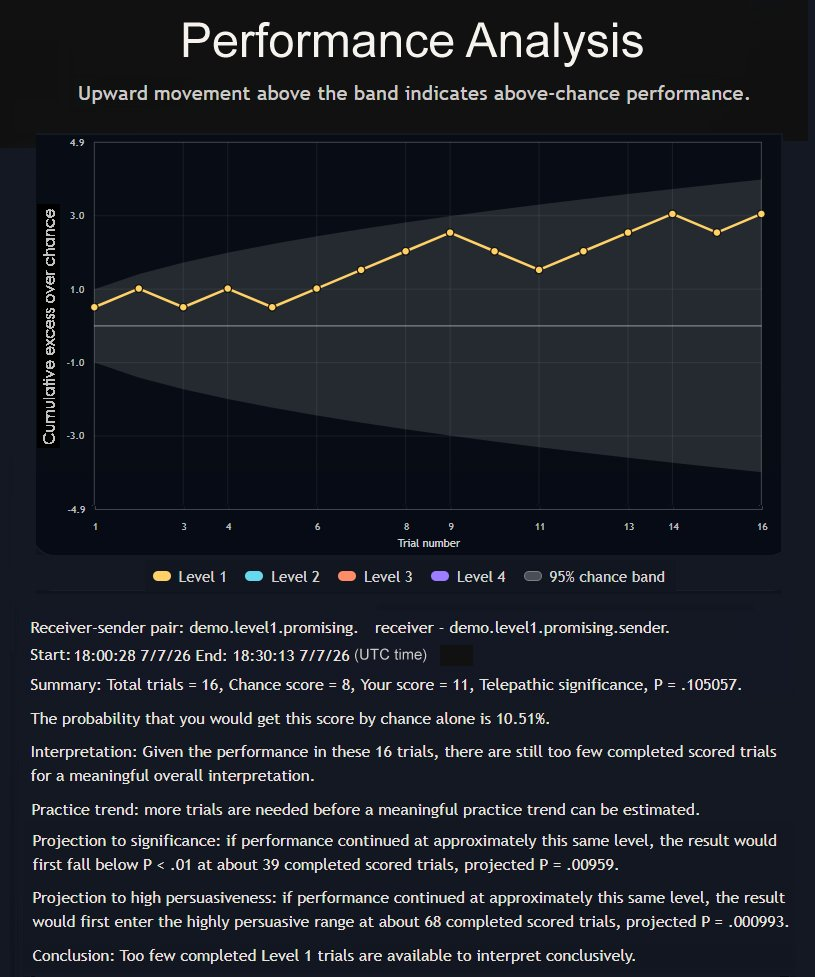

Telepathy Exercises with Graded Levels of Difficulty

ESP GYM
ESP GYM
ESP GYM helps users study performance over time by combining raw scoring results, graphical summaries, and plain-language interpretation.
The visualization tools show whether a run of trials is trending above chance, whether the current evidence is still too small to interpret strongly, and how different task levels contribute to the result. This makes it easier to distinguish encouraging patterns from ordinary fluctuation.
The example below shows a visualization based on a demo session, demo.level1.promising. It illustrates how ESP GYM combines graphing and interpretation which allows users to judge their performance in light of statistical evaluation.

EXCERPT FROM LESSON 5 OF THE ESP GYM COURSE
UNDERSTANDING PERFORMANCE ANALYSIS
How To Read Statistical Significance
The main number to understand in the concept of "statistical significance" is called the "P value." For example, a report might say,
Summary: Total trials = 16, Chance score = 8, Your score = 11, Telepathic significance, P = .105057.
The probability that you would get this score by chance alone is 10.51%.
The smaller the P value, the more your score would be unlikely to occur by chance alone. But statistical significance is only part of the story. The number of completed trials also matters.
A small block of trials can sometimes produce a mathematically significant result just by luck. For that reason, the right approach is to treat small-sample significance more cautiously than significance based on a larger block of completed trials.
The more completed trials you have, the more stable and trustworthy the result becomes. With very few completed trials, a significant result may be interesting, but it is not yet very persuasive. With a moderate number of completed trials, a significant result becomes more meaningful, but with a large block of completed trials, a strong significant result becomes much more persuasive and deserves serious attention.
The performance analysis asks two main questions:
1. Is the result statistically unlikely to be due to chance?
2. Is the result based on enough completed trials to be taken seriously?
Cumulative Data Graph
In the Level 1 practice trials, the odds of getting a response correct by chance alone is 50% (one half). So every time you get a response right, the graph goes up by one half; and every time you get a response wrong, the graph goes down by one half. If, on the average, you do better than chance, this plot will creep upwards. This graph plots "CUMULATIVE DATA."
If this graph goes above the shaded zone, it means that statistically there is less than a 5% chance that the data reflects chance alone. The longer and farther from the edge of the shaded zone that the graph data is plotted, the less and less chance there is that it can be explained by chance alone.
ESP GYM

ESP GYM
ESP GYM
This page is a placeholder for future websites and events.
ESP GYM
ESP GYM
This page is a placeholder for future peer reviewed journal articles.
ESP GYM
Use the "Contact ESP Gym" form to submit information for potential addition to this section.